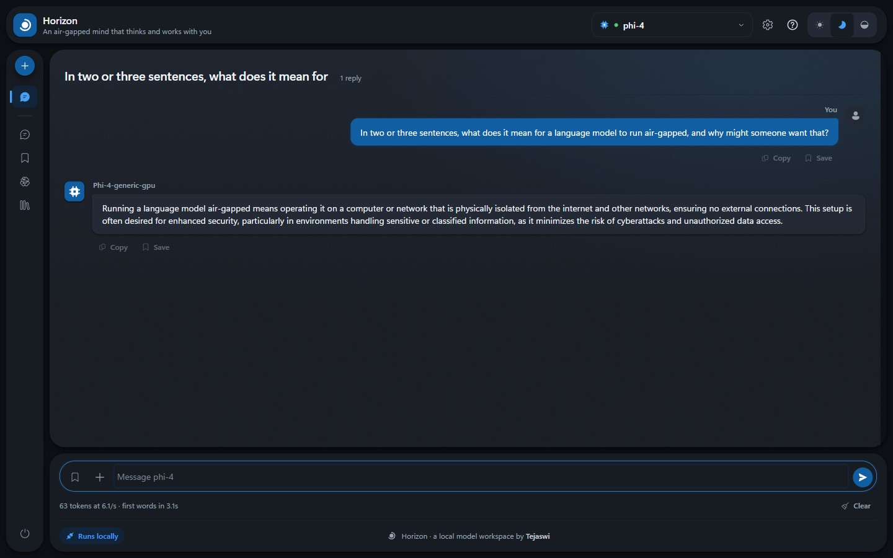
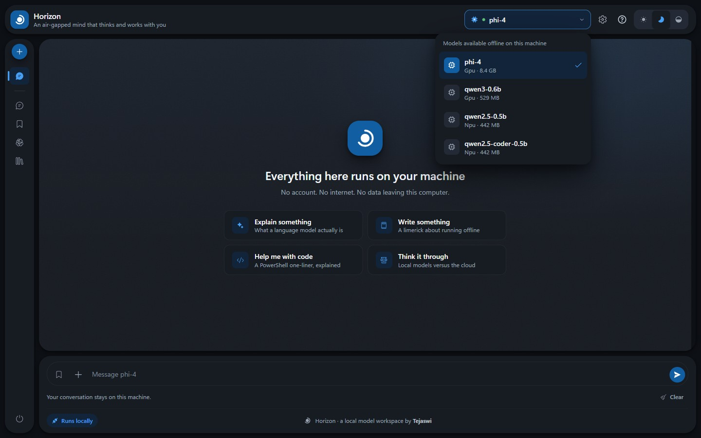
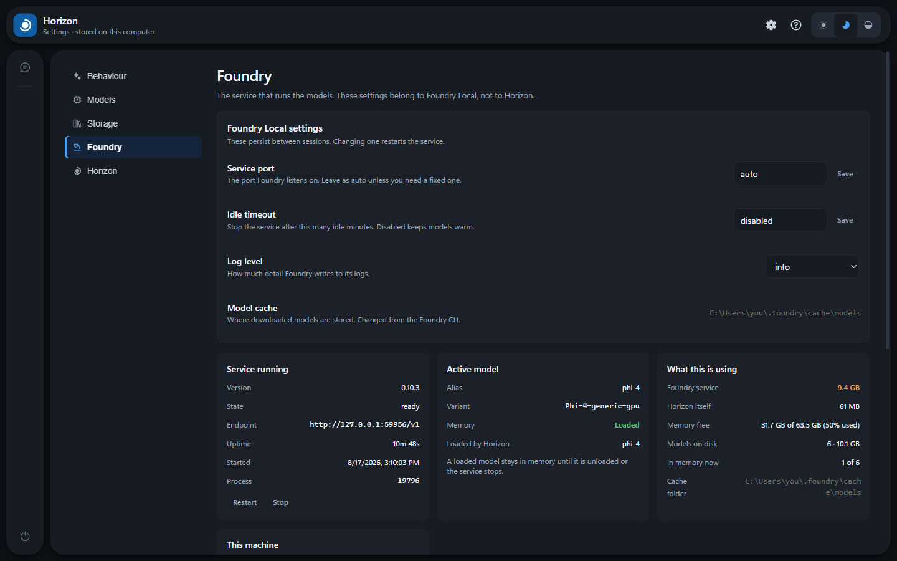
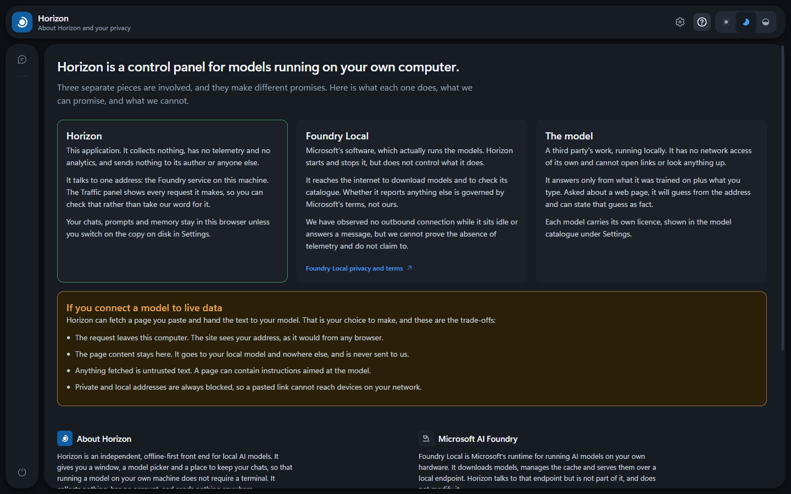
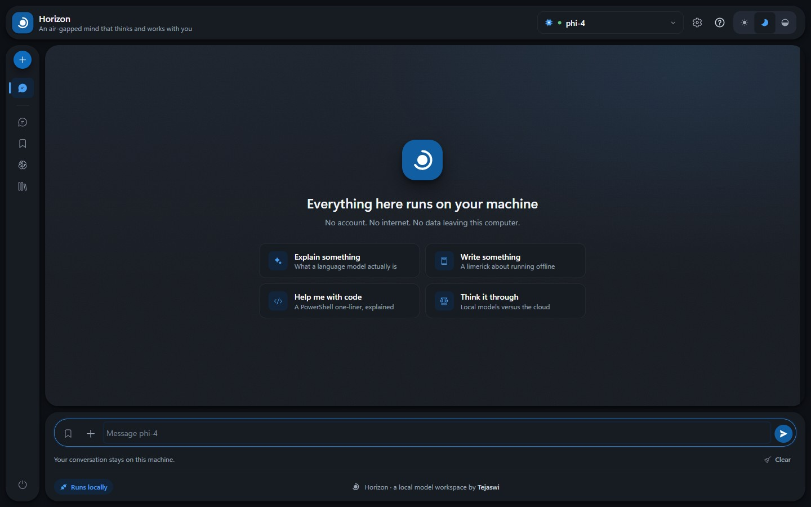
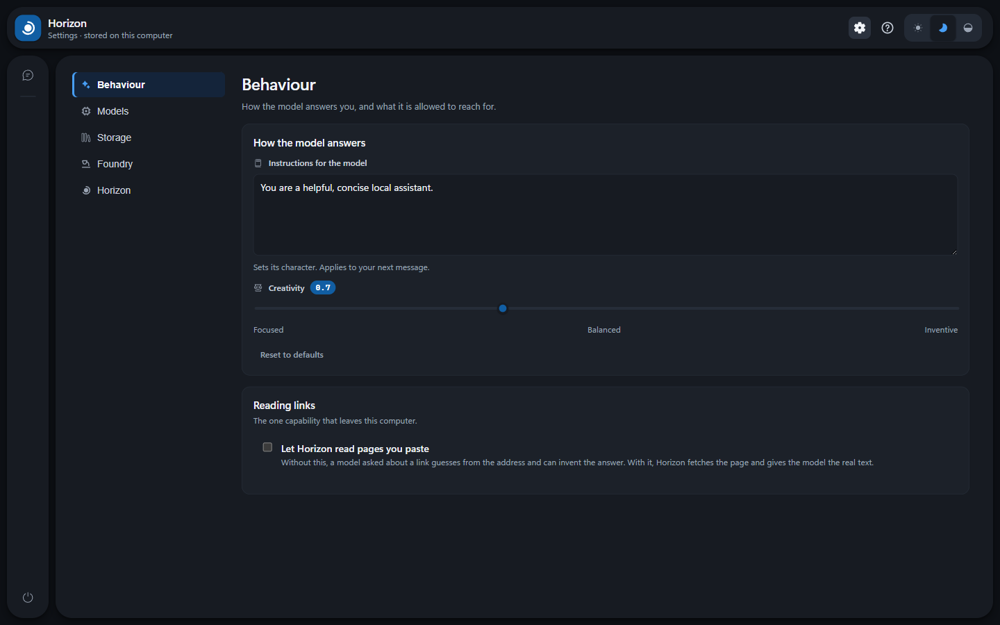

A private, air-gapped AI workspace built for Microsoft Foundry Local — chat, documents, prompts, memory and models, running entirely on your own hardware.
Those are strong claims, so Horizon is built so you can check them for yourself.
No telemetry, no analytics, no account, no API key. Horizon talks to exactly one address: the Foundry service on your own machine.
The Traffic panel records every request and response. Read the whole exchange
and see that it only ever goes to 127.0.0.1.
Once your models are cached, pull the network cable. The air-gap indicator notices passively — Horizon never makes a request to test for internet.
Fetching a page you asked it to read is the one thing that leaves this machine. While it happens the badge turns amber and names the host — the way your operating system shows an indicator while the camera is live.
Dictation is optional and off until you ask for it. Your voice goes to a speech model on this machine and nowhere else, and what you say is written into the message box for you to read before anything is sent.
Real screenshots, on real hardware, running phi-4 on a GPU. Nothing here is a mockup.






Probably worth being honest about this early.
…you want one interface across many providers — OpenAI, Anthropic, Ollama, Foundry Local and more. Both are mature, well supported, and have far more features than this does. Point them at Foundry Local's endpoint and they work.
…you want the opposite trade: one runtime, understood properly. Horizon starts and stops the service, loads and unloads models, re-discovers the port when Foundry restarts, and gives the memory back when you are done. You can speak to it as well as type, using a speech model that runs here like the rest. No Docker, no Electron, no account.
All of it local. Your browser never talks to Foundry directly — it only talks to the small Node.js server in the project folder.
foundry transcribe → your microphone dictation only
Foundry picks a new port on every restart. Horizon re-discovers it and reconnects on its own, mid-session, without losing your conversation.
Speech takes the second branch because Foundry does not offer it over the REST API. Foundry opens the microphone rather than the page, which is why the browser shows no recording indicator and Horizon shows its own.
Two one-time installs, then a double-click. Internet is needed for setup only. Pick whichever column sounds like you.
If you have never used a command line, follow this.
Download and run each installer. Both links go to the official source:
Microsoft Foundry Local
learn.microsoft.com
Node.js — choose the LTS version
nodejs.org
That is genuinely all. Accept the defaults in both installers, and restart the machine if either asks. Horizon needs nothing else: no Python, no build tools, no account anywhere.
On the project page, click the green Code button, then Download ZIP.
Windows marks files that come from the internet. Clear it on the ZIP and you will not have to clear it on every file inside.
Right-click the ZIP → Properties → tick Unblock at the bottom → OK.
No Unblock box? Nothing to clear — carry on.
Then right-click → Extract All… into a folder that belongs to you, such as Documents\horizon. Avoid C:\Program Files.
A small black window opens — that is the server, and it stays open while Horizon runs. Your browser opens at http://127.0.0.1:3000.
First launch downloads the model, around 8.4 GB. After that it works offline. If Windows says “Windows protected your PC”, click More info → Run anyway.
Do not close that black window to quit. It is the server: closing it kills Horizon mid-request and leaves the model — several gigabytes — sitting in memory. Use the power button at the bottom of the left rail instead. It unloads the model and gives the memory back.
Everything else is on the page. Under Settings → This machine you can add a desktop shortcut or have Horizon start when you sign in. You should not need a terminal again.
To speak instead of typing, open a terminal in the Horizon folder once and run npm install, then switch dictation on under Settings → Behaviour. It fetches a ready-built helper on Windows and macOS; on Linux it compiles one, which needs a build toolchain. Horizon works without it either way.
Cloning skips the unblock step — Git-created files are not tagged.
winget install Microsoft.FoundryLocal winget install OpenJS.NodeJS.LTS
git clone https://github.com/itstejaswi/horizon cd horizon .\"Start Horizon.bat"
No npm install to chat with a model — Horizon’s core has no runtime dependencies. Dictation is the one exception: it needs a terminal helper, installed with npm install, and Horizon runs without it.
.\scripts\Start-Horizon.ps1
Same thing, but it also starts Foundry and pre-loads the model so
the first message is quick. -WebPort, -ModelAlias and
-NoBrowser are accepted.
npm test # 24 regression tests, no model needed npm run check npm run build
The suite runs against a stub — no model, no GPU, no network.
| Requirement | Detail |
|---|---|
| Windows | Windows 10 or Windows 11. macOS support is on the roadmap, not here yet. |
| PowerShell | 5.1 or later — already included with Windows |
| Node.js | 18 or later |
| Disk | Roughly 10 GB for the model and its supporting files, plus about 700 MB if you want dictation |
| Internet | For the one-time setup only |
| Microphone | Only if you want to dictate. Optional, and off until you switch it on |